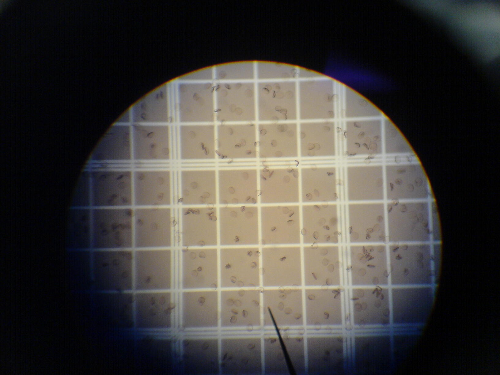

Human digestive system — mouth (salivary amylase, starch→maltose) → oesophagus (peristalsis) → stomach (HCl pH 1.5–3.5, pepsin, protein→peptides) → liver (largest gland, bile emulsifies fat) → pancreas (trypsin, lipase, amylase, insulin) → small intestine (villi, 90% absorption) → large intestine (water absorption, gut bacteria, vitamin K). Understanding this system is fundamental for BPSC biology.

Blood cells — RBCs (red blood cells, haemoglobin, carry O₂, no nucleus, 120-day lifespan), WBCs (white blood cells, 5 types: neutrophils, lymphocytes B/T, monocytes, eosinophils, basophils, fight infection, 4,000–11,000/μL), and platelets (clotting, fibrinogen→fibrin). Bihar's medical institutions (AIIMS Patna, PMCH est. 1925, IGIMS) study these systems extensively.
💡 Deep-dive ready: Complete analysis of all four body systems, organs, functions, Bihar medical connections, and 7 exam predictions:
Human Body Systems Master Detail →
A. Digestive System — Key Organs & Enzymes EXAM CORE
AIIMS Patna (All India Institute of Medical Sciences): established 2012 (under the Pradhan Mantri Swasthya Suraksha Yojana). One of India's premier medical institutes — teaching human anatomy, physiology, and all body systems. AIIMS Patna has a state-of-the-art anatomy department with cadaver dissection and digital anatomy labs. It also conducts research on diseases common in Bihar (encephalitis, kala-azar, tuberculosis).
PMCH (Patna Medical College Hospital): established 1925 (originally Prince of Wales Medical College). Bihar's oldest and largest medical college. Has trained thousands of doctors who serve across Bihar and India. PMCH's anatomy and physiology departments are foundational to understanding human body systems. PMCH is being upgraded to AIIMS-level facilities (2024-2027).
IGIMS (Indira Gandhi Institute of Medical Sciences, Patna): established 1983. A tertiary care hospital and medical institute. Known for cardiology (heart-related studies — circulatory system), neurology (nervous system), and gastroenterology (digestive system). IGIMS conducts research on liver diseases (hepatitis, cirrhosis — relevant to the liver, the largest gland).
SKMCH (Sri Krishna Medical College, Muzaffarpur): known for researching Acute Encephalitis Syndrome (AES) — a disease affecting the nervous system (brain). The AES outbreaks in Muzaffarpur (Bihar) have been linked to litchi consumption (hypoglycin toxin) and malnutrition. SKMCH's research on AES contributes to understanding the nervous system and brain function.
Bihar's health challenges and body systems: Bihar faces several health challenges directly related to body systems: (1) Encephalitis (nervous system — Muzaffarpur AES), (2) Kala-azar/leishmaniasis (immune system — common in Bihar), (3) Sickle cell anaemia (blood/circulatory — tribal populations), (4) Tuberculosis (respiratory — high prevalence), (5) Hepatitis (liver/digestive — waterborne). Understanding body systems is essential for addressing Bihar's health challenges.
Organ donation in Bihar: AIIMS Patna and IGIMS have organ donation programmes — primarily for kidney transplants (related to the excretory system). ROTTO (Regional Organ and Tissue Transplant Organisation) East is based in Kolkata but serves Bihar. Understanding human body systems is crucial for organ transplantation programmes.
🔗 Cross-Topic Connections
Topic 69 (Cell & Division): Cells are the building blocks of all body systems. Muscle cells form the heart (circulatory), neurons form the brain (nervous), and epithelial cells line the digestive tract. Mitosis replaces damaged cells in all body systems.
Topic 71 (Nutrition & Vitamins): The digestive system absorbs nutrients (carbohydrates, proteins, fats, vitamins, minerals) from food. Deficiency diseases (scurvy, rickets, anaemia) result when the digestive system cannot absorb enough nutrients — or when the diet is deficient.
Topic 72 (Diseases & Pathogens): Diseases affect specific body systems: pneumonia (respiratory), heart disease (circulatory), hepatitis (digestive/liver), meningitis (nervous). Understanding body systems is essential for understanding how diseases affect the body.
📰 Current Relevance
Organ donation and transplantation: India has a severe organ shortage — ~500,000 people die each year waiting for organs. Kidney, liver, heart, and lung transplants are the most common. AIIMS Patna is developing transplant capabilities. The Transplantation of Human Organs Act (THOA, 1994, amended 2011) regulates organ donation in India.
COVID-19 and the respiratory system: COVID-19 (SARS-CoV-2) primarily affects the respiratory system — attacking the alveoli and causing pneumonia and acute respiratory distress syndrome (ARDS). Understanding the respiratory system is crucial for understanding how respiratory viruses cause disease and how ventilators help.
Heart disease in India: cardiovascular disease is the leading cause of death in India (~28% of all deaths). Risk factors: hypertension, diabetes, smoking, obesity, sedentary lifestyle. Bihar has rising rates of heart disease — AIIMS Patna and IGIMS provide cardiac care. Knowing the circulatory system helps understand heart disease.
Diabetes and the pancreas: India has ~77 million diabetics (second highest in the world after China). Diabetes results from the pancreas not producing enough insulin (Type 1) or cells becoming insulin-resistant (Type 2). Understanding the pancreas and insulin is essential for managing diabetes.
Brain research and neuroscience: the human brain (nervous system) is the least understood organ. India's National Brain Research Centre (NBRC, Manesar) conducts neuroscience research. Understanding the brain helps treat Alzheimer's, Parkinson's, stroke, and mental health conditions.
Bihar's encephalitis (AES) challenge: Muzaffarpur (Bihar) has seen recurrent AES outbreaks affecting children's nervous systems. Research at SKMCH and AIIMS Patna aims to understand the causes (litchi toxins, heat, malnutrition) and develop prevention strategies. This is a Bihar-specific health challenge directly related to the nervous system.
✍️ MCQ Practice Set — 25 Questions (BPSC Level)
Test your knowledge. Select the best answer for each question, then click "Check Answers" to see your score and explanations.
Your Score: 0/25
Q1. Which organ is the largest in the human digestive system and performs over 500 functions including detoxification?
✅ Correct Answer: (D) — Liver = largest internal organ (~1.5 kg) + largest gland. 500+ functions: bile production, detoxification, glycogen storage, protein synthesis. Only organ that can regenerate. Also metabolises carbohydrates, fats, and proteins.
Q2. In the human digestive system, where does most of the nutrient absorption take place?
Q3. Bile, which emulsifies fats in the digestive system, is produced by which organ and stored in which organ?
✅ Correct Answer: (D) — Bile produced by liver (continuously), stored/concentrated in gallbladder. Released into duodenum when fat enters. Emulsifies fats (breaks large globules into small droplets). Bile is NOT an enzyme — it's an emulsifying agent. Also neutralises acidic chyme from stomach.
Q4. The largest gland in the human body is:
✅ Correct Answer: (C) — Liver = largest gland AND largest internal organ (~1.5 kg). Classified as a gland because it secretes bile. Skin is the largest organ overall (by surface area), but liver is the largest internal organ and largest gland.
Q5. The human heart has how many chambers?
✅ Correct Answer: (D) — 4 chambers: right atrium (deoxy blood from body) → right ventricle (to lungs), left atrium (oxy blood from lungs) → left ventricle (to body). Left ventricle = thickest wall (pumps to whole body). Heart size = closed fist.
Q6. Which blood vessels carry blood AWAY from the heart?
Q7. The normal resting heart rate of a healthy adult is approximately:
✅ Correct Answer: (C) — Normal resting HR: 60-100 bpm (average ~72). Athletes: 40-60 (stronger heart). >100 = tachycardia. <60 = bradycardia. Heart pumps ~5 litres/minute at rest (cardiac output). Increases during exercise to deliver more O₂ to muscles.
Q8. The exchange of oxygen and carbon dioxide in the human body occurs at which site?
✅ Correct Answer: (C) — Alveoli = gas exchange site. ~300-500 million in lungs. Surface area ~70 m² (tennis court size). One cell thick. Surrounded by capillaries. O₂ diffuses into blood (binds haemoglobin), CO₂ diffuses out to be exhaled.
Q9. The functional unit of the human kidney (the basic filtering unit) is called:
✅ Correct Answer: (A) — Nephron = functional unit of kidney (~1 million per kidney). Parts: glomerulus (filters blood) → Bowman's capsule → proximal tubule → Loop of Henle → distal tubule → collecting duct. Filters ~180L blood/day → ~1.5L urine. Reabsorbs useful substances, excretes waste (urea).
Q10. The basic functional unit of the nervous system is the:
✅ Correct Answer: (C) — Neuron = functional unit of nervous system. ~86 billion in brain. Parts: dendrites (receive signals), cell body/soma (nucleus, processes), axon (transmits impulses). Communicate at synapses via neurotransmitters. Speed up to 120 m/s.
Q11. Which part of the human brain controls balance, coordination, and fine motor movements?
✅ Correct Answer: (D) — Cerebellum ('little brain') at back of brain, below cerebrum. Controls balance, posture, coordination, fine motor movement. Damage = ataxia (loss of coordination, shaky movements). Cerebrum = thinking. Medulla = breathing/HR. Hypothalamus = hormones/temp.
Q12. The largest part of the human brain, responsible for thinking, memory, and voluntary movement, is the:
✅ Correct Answer: (D) — Cerebrum = largest part (~85% brain weight). Left + right hemispheres (corpus callosum connects). 4 lobes: frontal (thinking, personality), parietal (sensation), temporal (hearing, memory), occipital (vision). Outer layer = cerebral cortex (grey matter).
Q13. Which part of the brain controls involuntary functions such as breathing, heart rate, and blood pressure?
✅ Correct Answer: (C) — Medulla oblongata (brain stem) controls involuntary functions: breathing, heart rate, BP, digestion, reflexes (swallowing, vomiting, coughing). Damage is fatal. Brain stem = medulla + pons + midbrain. Most primitive part of brain. Connects brain to spinal cord.
Q14. How many bones are there in the adult human body?
✅ Correct Answer: (D) — 206 bones in adults (270 at birth — many fuse during growth). Axial skeleton: 80 (skull, spine, ribs). Appendicular: 126 (limbs, girdles). Smallest = stapes (ear, ~3mm). Largest = femur (thigh, ~48cm). Bones provide structure, protect organs, produce blood cells (marrow), store minerals.
Q15. Which enzyme in the saliva begins the digestion of starch in the mouth?
✅ Correct Answer: (A) — Salivary amylase (ptyalin) in saliva breaks starch → maltose (disaccharide). Works in slightly alkaline mouth. Starch digestion continues in small intestine (pancreatic amylase). Protein digestion begins in stomach (pepsin). Fat digestion mainly in small intestine (pancreatic lipase).
Q16. The stomach produces which acid that helps in protein digestion and kills bacteria?
✅ Correct Answer: (B) — HCl (pH 1.5-3.5) produced by parietal cells. Functions: (1) activates pepsinogen → pepsin (protein digestion), (2) kills bacteria/pathogens. Stomach lining protected by mucus. Damage to mucus → ulcers. HCl is one of the strongest acids in the body.
Q17. The enzyme pepsin, which digests proteins in the stomach, is secreted in an inactive form called:
✅ Correct Answer: (D) — Pepsin secreted as inactive pepsinogen (by chief cells) to prevent self-digestion of stomach. HCl activates pepsinogen → pepsin. Similarly, pancreas secretes trypsinogen (inactive) → activated to trypsin in small intestine. This safety mechanism prevents organs from digesting themselves.
Q18. The diaphragm, the main muscle of respiration, separates which two body cavities?
✅ Correct Answer: (C) — Diaphragm = dome-shaped muscle separating thoracic (chest: heart, lungs) from abdominal cavity (stomach, liver, intestines). Contracts (flattens) → chest expands → air drawn in (inhalation). Relaxes (domes up) → air pushed out (exhalation). Hiccups = diaphragm spasms.
Q19. The pH of human blood is approximately:
✅ Correct Answer: (D) — Blood pH 7.35-7.45 (slightly alkaline). Below 7.35 = acidosis (coma). Above 7.45 = alkalosis (seizures). Maintained by bicarbonate buffer system (HCO₃⁻/H₂CO₃), respiratory regulation (CO₂), and renal regulation (kidneys excrete acid/base). Narrow range is critical for survival.
Q20. Which type of muscle is found in the walls of internal organs (stomach, intestines, blood vessels) and is involuntary?
✅ Correct Answer: (D) — Femur (thigh bone) = longest, strongest, heaviest bone (~48 cm). Connects hip to knee. Supports ~30x body weight. Smallest bone = stapes (middle ear, ~3mm). Femur fractures require significant force and can cause life-threatening blood loss (femoral artery nearby).
Q24. The human respiratory system's trachea (windpipe) is kept open by which structures?
✅ Correct Answer: (C) — 16-20 C-shaped cartilage rings keep trachea open. 'C' shape (open at back) allows oesophagus (behind trachea) to expand during swallowing without compressing the trachea. Trachea divides into left and right bronchi → bronchioles → alveoli (gas exchange).
Q25. Which valve in the human heart prevents backflow of blood from the left ventricle to the left atrium?
✅ Correct Answer: (B) — Mitral (bicuspid) valve = between left atrium and left ventricle. Prevents backflow when left ventricle contracts. 4 valves: tricuspid (R atrium→R ventricle), pulmonary (R ventricle→pulmonary artery), mitral (L atrium→L ventricle), aortic (L ventricle→aorta). Valve defects → heart murmurs.
🎯 Exam Predictions
P1Digestive system (HIGH): Liver (largest gland, bile, detox), small intestine (villi, 90% absorption), salivary amylase (starch), pepsin/HCl (stomach, protein), bile (liver→gallbladder, emulsifies fat). Know the enzyme, organ, and function for each.
P3Nervous system (HIGH): Neuron (functional unit, ~86 billion), cerebrum (thinking, 4 lobes), cerebellum (balance), medulla (breathing/HR/BP). Know which brain part does what. Synapse = junction between neurons.